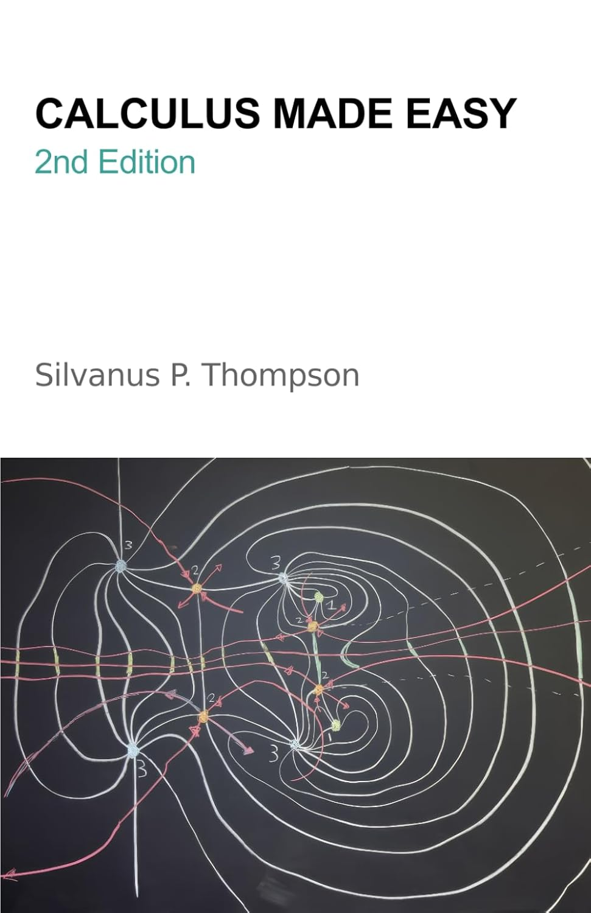
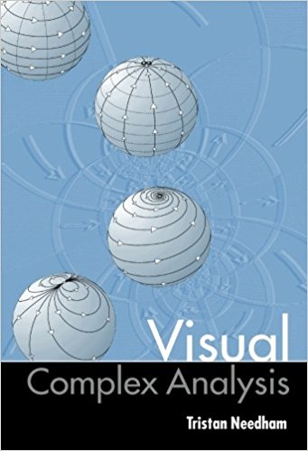
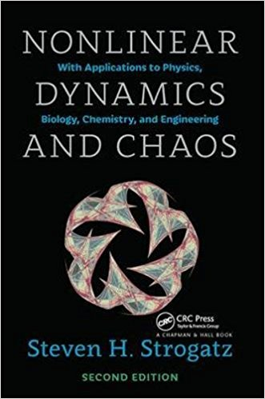

《微积分其实很容易》是 Silvanus P. Thompson 于 1910 年首次出版的一本微积分入门书，被认为是这一主题的经典而优雅的导论。
来自 Wikipedia
我读过 Silvanus P. Thompson 的《微积分其实很容易》，直到今天，它仍然启发我怎样向普通人解释复杂的技术主题。这是一本了不起的书；哪怕你懂数学，只要你想明白怎样把复杂的东西教给别人，你也必须读它。 （来源）
Thompson 营造了一种温暖而亲切的氛围，让学生能在没有多余废话、也没有过度技术化表述的情况下，学习并把握微积分真正的本质。 （来源）
-- MathBlog
大多数大学微积分教材都厚得吓人；这一本不是，它直奔主题。我就是这样学会微积分的：我叔叔给了我一本。 （来源）

→ 购买纸质版



感谢 Paula Appling、Don Bindner、Chris Curnow、Andrew D. Hwang 和 Project Gutenberg Online Distributed Proofreading Team 准备原始 PDF。
主题借用了 Dive Into HTML5，作者是 Mark Pilgrim，该主题以 CC-BY-3.0 许可证发布。
请将修正、建议和评论发送至 [email protected]